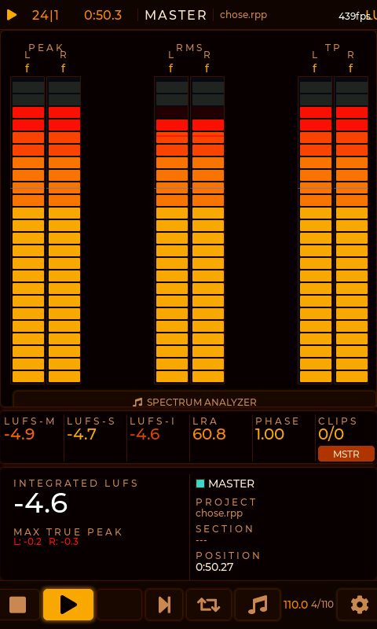
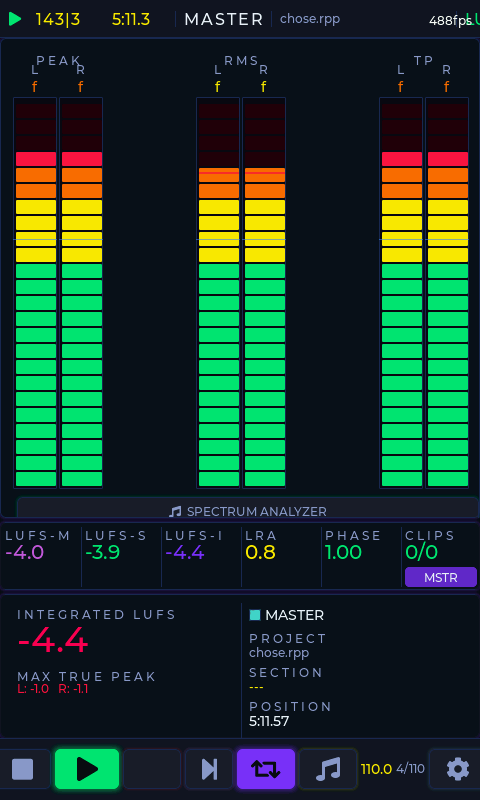
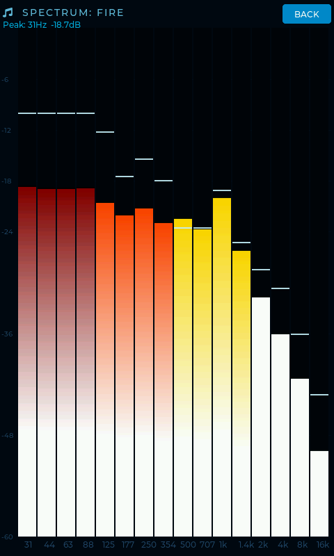
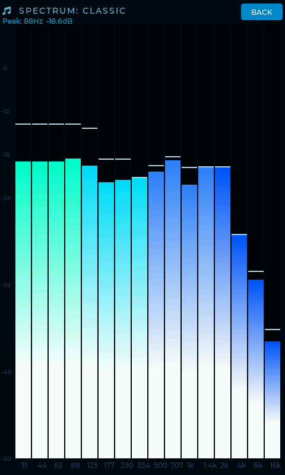
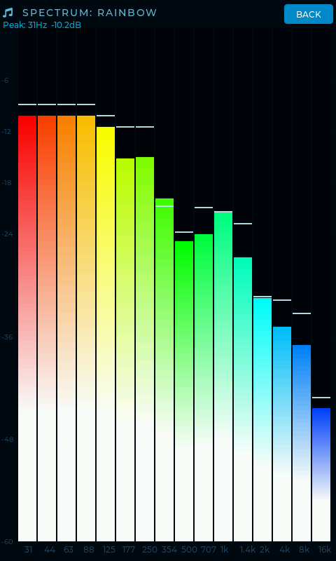
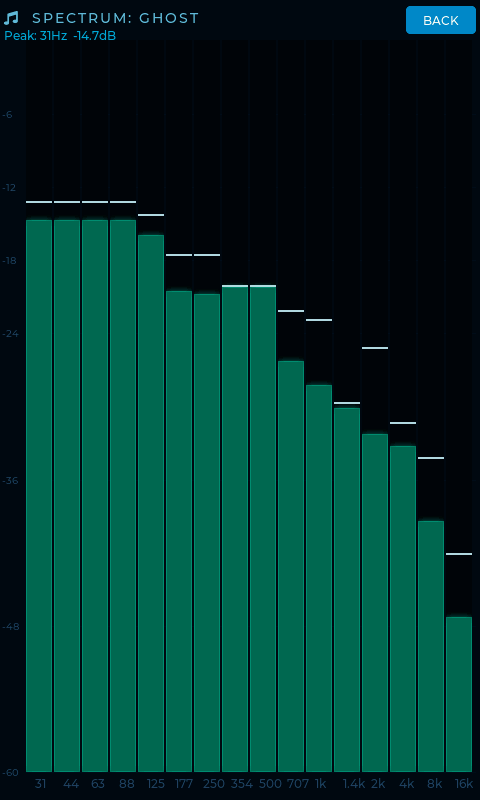
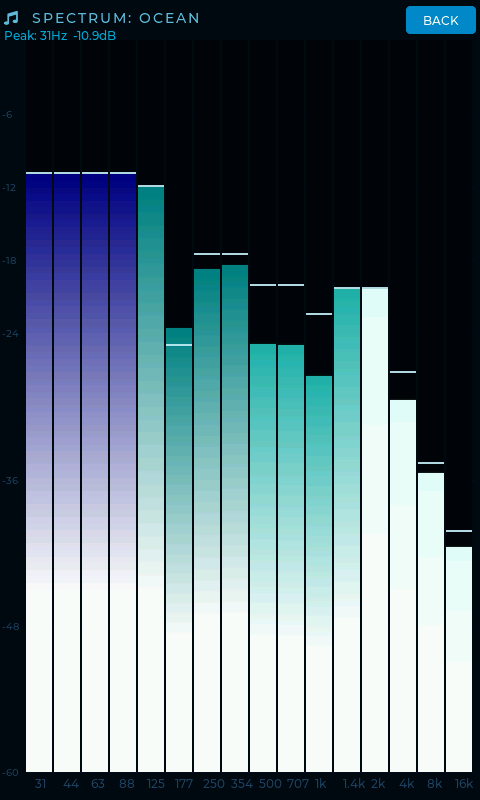
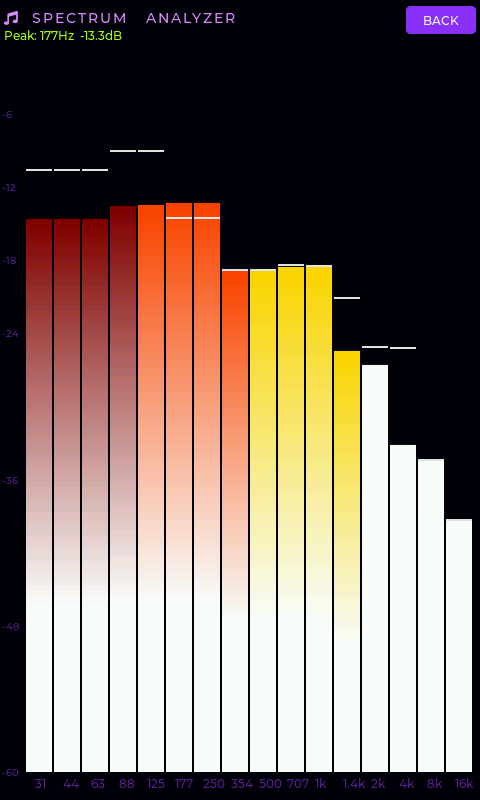
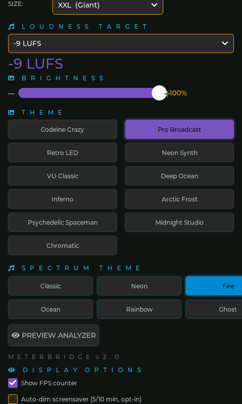

Every screenshot on this page was captured directly from a physical CrowPanel 7" ESP32 running MeterBridge v2.0 while streaming live audio from REAPER.
Four lightweight components, all running on commodity hardware. No proprietary protocols, no cloud, no latency surprises.
These screenshots were captured mid-playback from a REAPER mixing session, streaming live audio. The display was showing exactly this when the screenshot was taken remotely via the HTTP API.


The entire UI reflows when you change the rotation in Settings. Landscape mode maximizes horizontal screen real estate for wider meter bars and a full sidebar of LUFS data.
The 16-band spectrum analyzer screen shows frequency content from 31 Hz to 16 kHz. Each bar has a white peak-hold marker. All six color themes shown below — captured live from a real session.

The Fire theme maps amplitude to color temperature — cool reds for the hottest signal tapering to white at low levels. It's optimized for dark studio environments where a warm glow is less fatiguing than cool blues.
This session was at −4.6 LUFS-I, well into commercial loudness territory. The 31 Hz sub-bass dominance you see here is typical of modern hip-hop/electronic production.

The Classic theme uses a cyan-to-deep-blue gradient that resembles vintage hardware spectrum bridge units. It provides maximum readability under studio fluorescent lighting.
Notice the midrange resonance lift at 250 Hz–1 kHz — the wider spread here compared to Fire reveals a different musical moment in the session.

Rainbow maps frequency position (not amplitude) to hue. Sub-bass sits in red, low-mids in orange/yellow, mids in green, highs in cyan-blue. This makes it trivially easy to identify which frequency ranges are active.
The teal spike visible around 1 kHz–1.4 kHz in this capture shows an interesting dip-and-rise in that frequency range — likely a room resonance or deliberate mix notch.

Ghost removes all amplitude-based coloring. The monochrome presentation forces you to read the shape of the spectrum rather than being drawn to color hotspots. Ideal for mastering engineers who want neutral reference.
In this capture you can see the smooth natural rolloff of the high frequencies above 4 kHz — cleaner than the Fire capture, suggesting this was taken at a quieter passage.

Ocean uses a navy-to-teal gradient that integrates naturally into dark room environments. It's lower in perceived brightness than Fire or Rainbow, reducing eye strain during extended monitoring sessions. The deep blue at the base and teal at the peaks create a wave-like appearance.

The white horizontal dash above each bar is the peak-hold marker. It stays at the highest value seen for a configurable hold time (default 0.5s "Snappy" — also available in 2s, 5s, or ∞ forever).
The spectrum is computed by the JSFX plugin using a 256–2048 point FFT, downmixed to 16 frequency bands covering the perceptually important range from 31 Hz to 16 kHz.
No config files, no command line. Every setting is accessible from the touchscreen Settings page and persists across reboots in NVS flash.

$40 in hardware. 5 minutes to flash. A professional metering surface that lives outside your DAW.